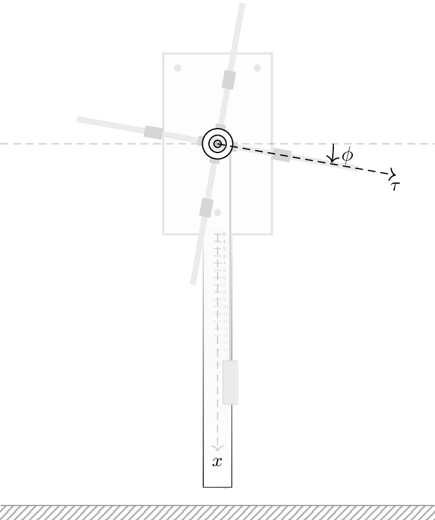

pre.tex
\documentclass[tikz]{standalone}\input{pre.tex}\begin{document}\begin{tikzpicture}
\def\iangle{-10};
\def\rule{35mm};
\draw[axis, opacity=0.5] (-30mm,0) -- (30mm,0);
\coordinate (0) at (0,0);
\begin{scope}
\node[fill=black!10, opacity=0.1] (rect) at (0) [draw,thick,minimum width=15mm,minimum height=25mm] {};
\draw[fill=black, opacity=0.1] ({-15mm/2+2mm},{25mm/2-2mm}) circle (4mm/10);
\draw[fill=black, opacity=0.1] ({15mm/2-2mm},{25mm/2-2mm}) circle (4mm/10);
\draw[fill=black, opacity=0.1] ({0},{-25mm/2+3mm}) circle (4mm/10);
\draw[color=black!10,fill=black!2] ({-2mm},{-25mm/2+0mm}) rectangle ({2mm},{-25mm/2-\rule});
\draw[color=black!2,fill=black!2] ({-1.9mm},{-25mm/2+1mm}) rectangle ({1.9mm},{-15mm});
\foreach \y in {0,1,...,35} {
\draw[color=black!20] (-0.5mm,-\y mm - 25mm/2) -- (0.5mm,-\y mm - 25mm/2) node[right, color=black!40, scale=0.2] {$\y$};
}
\draw[color=black!10,fill=black!2, path fading=north, bottom color=white, top color=black!3] ({-2mm},{-25mm/2+0mm}) rectangle ({2mm},{-25mm/2-\rule});
\end{scope}
% \draw[axis, line width = 0.3pt, ->] (-10mm, -12.5mm) -- ++(20mm, -0mm) node[right, scale=0.8]{$y$};
\draw[axis, line width = 0.3pt, ->, color=black!30] (0, -12.5mm) -- ++ (0, -30mm) node[below, scale=0.8, black]{$x$};
\draw[interface] (-30mm,-50mm) rectangle ++(60mm,-2mm);
\draw[thin, black!50] (-30mm,-50mm) -- ++(60mm,0);
\foreach \x in {0,90,...,270} {
\draw[line width=8mm/10, color=black!10] (0) -- +({\x+\iangle}:{395mm/10/2});
\draw[line width=13.5mm/10, color=black!20] (0) -- +({\x+\iangle}:{6.3mm/10+42mm/10/2});
\draw[line width={31.5mm/10/2}, color=black!20] ($(0)+({\x+\iangle}:{6.3mm/10+42mm/10/2+5mm})$) -- +({\x+\iangle}:{25mm/10});
}%
\draw[black!20,thick] ($(0)+(35mm/10/2,0)$) -- ++ (0,-30mm);
\draw[color=black!15, fill=black!10] ($(0)+(35mm/10/2,0)+(-1mm,-30mm)$) rectangle ++(2mm,-6mm);
\draw[fill=white] (0) circle (35mm/10/2);
\draw[fill=white] (0) circle (42mm/10/2);
\draw[fill=black!10] (0) circle (24mm/10/2);
\draw[fill=black!30] (0) circle (10mm/10/2);
\draw[axis, black, ->] (0) -- ++(\iangle:25mm) node[below, scale=0.8]{$\tau$};
\draw[solid,shorten >=0.5pt, ->] (0)++(1.6cm,0) arc(0:\iangle:1.6cm);
\node[color=black, scale=0.8] at ($(0)+(\iangle/2:1.8)$) {$\phi$};
\end{tikzpicture}\end{document}